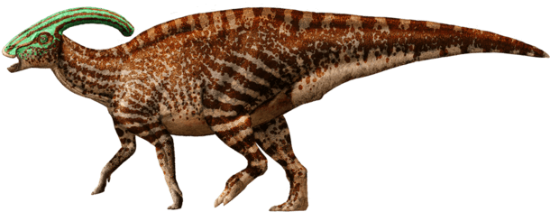

Parasaurolophus
Near Crested Lizard
Diet: Herbivore
Parasaurolophus is a hadrosaurid (sometimes called a duck-billed dinosaur) from approximately 76.5–73 million years ago (late Cretaceous). It is a herd animal feeding on the park’s rich vegetation. The most stunning feature of the Parasaurolophus is the crest on its head.
Scientists were unsure of its function until today. Some believed it was a snorkel for when the animal was in the water, others felt that it was used in combat. We now know that it serves for display and for communication, allowing the animals to remain in contact over distance by amplifying their haunting, beautiful cries.